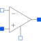

IdealOpAmpIdeal operational amplifier (norator-nullator pair) |

|
Information
This information is part of the Modelica Standard Library maintained by the Modelica Association.
The ideal OpAmp is a two-port. The left port is fixed to v1=0 and i1=0 (nullator). At the right port both any voltage v2 and any current i2 are possible (norator).
Connectors (4)
| p1 |
Type: PositivePin Description: Positive pin of the left port |
|
|---|---|---|
| n1 |
Type: NegativePin Description: Negative pin of the left port |
|
| p2 |
Type: PositivePin Description: Positive pin of the right port |
|
| n2 |
Type: NegativePin Description: Negative pin of the right port |
Used in Components (1)
|
Modelica.Mechanics.MultiBody.Examples.Systems.RobotR3.Components Motor model including current controller of r3 motors |